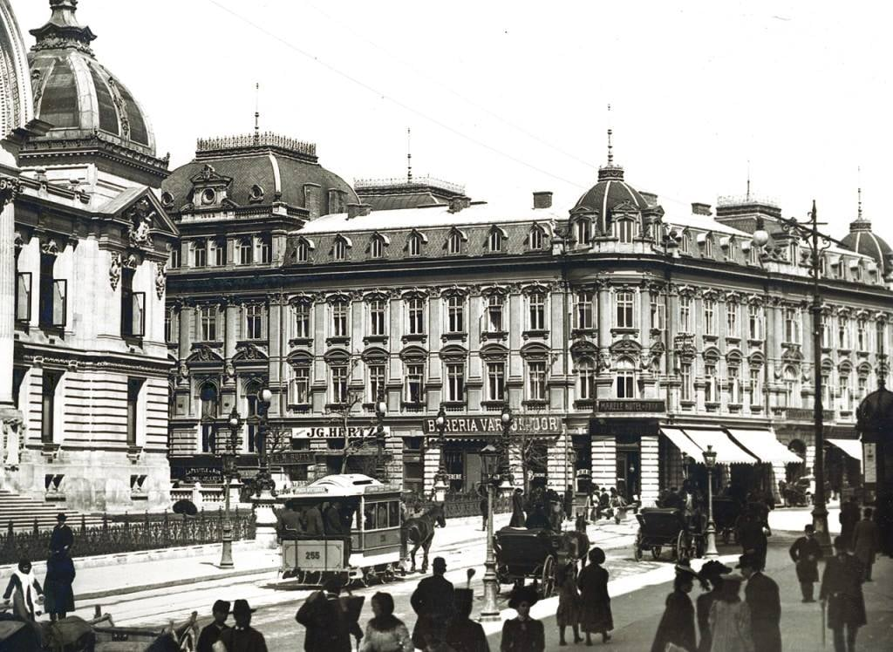
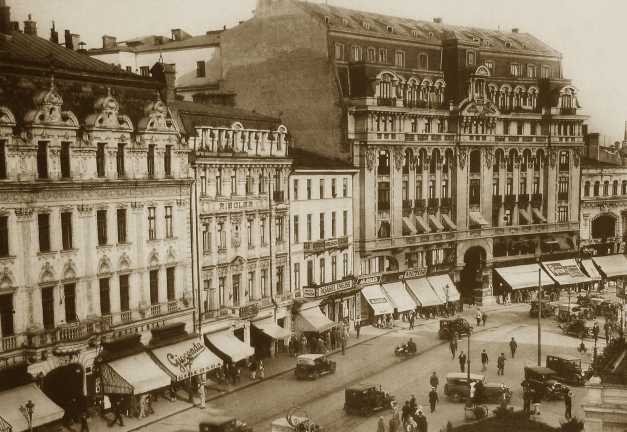
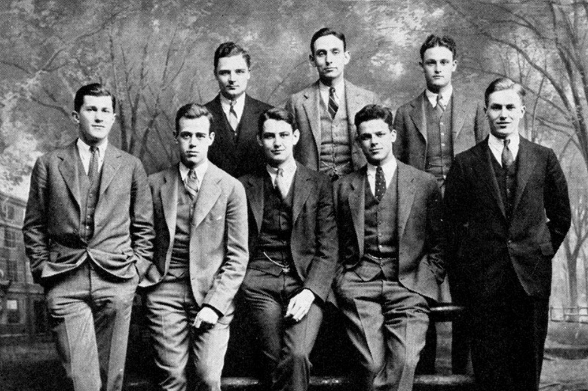
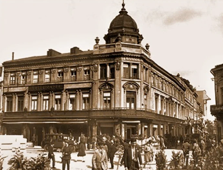
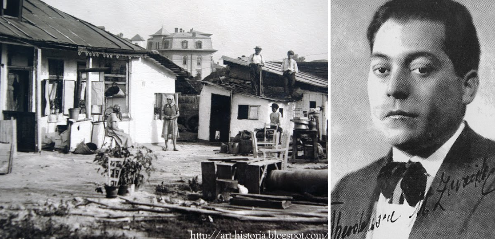
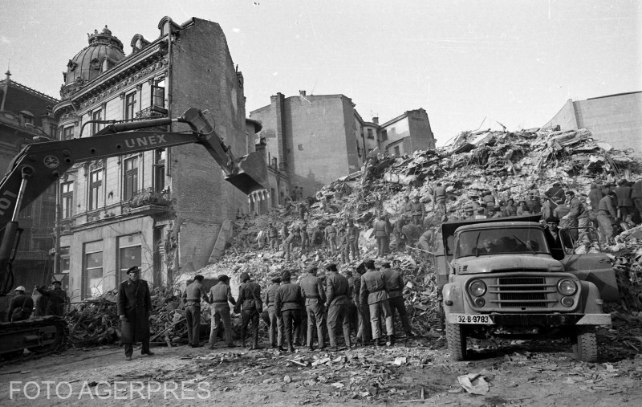

Concursul Național de Referate și Comunicări Științifice
Micul Paris
Viața dintre șlagăre și decădere

↓Introducere
Perioada interbelică a reprezentat una dintre cele mai importante etape în dezvoltarea Bucureștiului, fiind caracterizată prin transformări economice, sociale și culturale profunde. După desăvârșirea unității naționale în anul 1918, capitala României a cunoscut o dezvoltare accelerată, determinată atât de rolul politic și administrativ al orașului, cât și de extinderea activităților economice și industriale. Creșterea populației, dezvoltarea infrastructurii urbane și modernizarea spațiului public au contribuit la transformarea Bucureștiului într-un important centru urban al Europei de Sud-Est.
În această perioadă, Bucureștiul începe să fie asociat tot mai frecvent cu denumirea de „Micul Paris”, expresie care reflecta influențele occidentale prezente în arhitectură, modă, cultură și stil de viață. Apariția unor noi spații de socializare și divertisment, dezvoltarea cinematografelor, restaurantelor, cafenelelor și intensificarea vieții culturale au contribuit la imaginea unei capitale moderne și elegante.
Cu toate acestea, imaginea unui oraș prosper și modern coexistă cu numeroase contraste sociale și economice. Dincolo de zonele centrale elegante și de dezvoltarea urbană accelerată, Bucureștiul interbelic păstra diferențe evidente între categorii sociale și între diferitele zone ale orașului, fapt ce oferă o imagine complexă asupra acestei perioade istorice.
Prezenta lucrare își propune să analizeze principalele transformări ale Bucureștiului interbelic, evidențiind procesul de modernizare și occidentalizare, dezvoltarea culturală și socială, precum și contradicțiile care au contribuit la formarea imaginii de „Micul Paris”.
Nașterea „Micului Paris”

Originea denumirii
Expresia "Micul Paris" apare la sfârșitul secolului al XIX-lea și se răspândește rapid în Belle Époque, o perioadă de efervescență culturală și dezvoltare urbanistică1. Influența franceză asupra României fusese deja consolidată prin educația elitei și arhitectura inspirată din marile capitale europene. Bucureștiul, un oraș al contrastelor, capitala României moderne și orașul care găzduiește primul Parlament al statului modern, ni se prezintă în această perioadă cu bulevarde largi, clădiri somptuoase și un stil de viață rafinat2, părea să împrumute din farmecul Parisului, vestitul oraș al luminilor.
Transformarea urbană a Bucureștiului – Calea Victoriei
În perioada interbelică, Bucureștiul a cunoscut o dezvoltare urbană accelerată. Desăvârșirea unității naționale din 1918 a avut consecințe importante asupra capitalei, care devenise orașul central al unei țări cu suprafața și populația mult mărite. Dezvoltarea politică și administrativă a fost dublată de o dezvoltare economică importantă, prin apariția unor fabrici noi, extinderea celor existente și creșterea numărului de instituții.
Această dezvoltare a dus la extinderea orașului și la apariția unor noi zone de locuire. Noile parcelări au permis construirea de locuințe în periferie, iar aceasta a absorbit o parte a populației venite din mediul rural. Bucureștiul începea astfel să devină un centru urban tot mai complex, cu zone centrale reprezentative și zone periferice aflate încă în proces de dezvoltare.
Un exemplu important al modernizării urbane îl reprezintă Calea Victoriei. Modernizată treptat, de la vechiul drum podit cu bârne de lemn până la pavarea cu piatră cubică și asfaltarea de dinaintea Primului Război Mondial, aceasta a devenit în perioada interbelică una dintre cele mai importante artere ale capitalei. Aici se aflau instituții administrative, culturale și științifice importante, precum CEC-ul, Palatul Poștelor, Fundația Universitară „Carol I”, Casa Capșa și Academia Română3. Ridicarea Palatului Telefoanelor a întărit imaginea Căii Victoriei ca spațiu al modernității și al influențelor occidentale.
Influența franceză și modelul occidental
Modelul occidental, în special cel francez, a avut un rol important în conturarea imaginii Bucureștiului interbelic. Influența franceză se observa în arhitectură, educația elitelor, modă, limbaj social și în felul în care era organizată viața urbană4. Cafenelele, restaurantele, teatrele, cinematografele și spațiile de promenadă contribuiau la formarea unui stil de viață urban modern. Prin aceste transformări, Bucureștiul interbelic nu era doar un centru administrativ, ci și un spațiu al modernității culturale. Denumirea de „Micul Paris” exprima această combinație dintre influența occidentală, aspirația către eleganță și dorința capitalei de a se afirma ca oraș european. Deși Bucureștiul interbelic era adesea prezentat ca un oraș elegant și modern, dezvoltarea sa nu a fost uniformă. Imaginea bulevardelor centrale, a localurilor cunoscute și a clădirilor reprezentative contrasta cu realitatea periferiilor, unde infrastructura era mai slab dezvoltată, iar condițiile de trai erau mai modeste5.
Astfel, imaginea de „Micul Paris” trebuie înțeleasă mai ales ca expresie a centrului elegant, cultural și administrativ al Bucureștiului. Dincolo de această imagine, capitala rămânea un spațiu al contrastelor, în care modernizarea era vizibilă, dar nu ajunsese în aceeași măsură la toate zonele orașului.
Eleganța ca formă de identitate socială

Moda și imaginea socială- masculinitate și feminitate în spațiul urban
În Bucureștiul interbelic, moda a devenit una dintre cele mai vizibile forme de exprimare a statutului social. Influențele occidentale, în special cele venite din Franța, au fost preluate mai ales de clasele urbane înstărite, care încercau să se apropie de stilul marilor capitale europene. Îmbrăcămintea nu avea doar rol practic, ci devenea un mod prin care individul își afirma poziția socială, educația și apartenența la un anumit mediu.
Pentru femei, moda interbelică reflecta schimbări importante ale societății. Rochiile deveneau mai lejere, coafurile mai moderne, iar imaginea femeii elegante era tot mai prezentă în fotografii, reviste și spațiul public6.
Pentru bărbați, costumul, pălăria și accesoriile elegante reprezentau semne ale respectabilității și ale integrării în viața urbană modernă. Astfel, moda contribuia la construirea unei imagini sociale prin care Bucureștiul își întărea reputația de oraș modern și occidentalizat. În spațiul urban interbelic, imaginea bărbatului și a femeii era strâns legată de comportament, vestimentație și locurile frecventate. Bărbatul elegant era asociat cu viața publică, cu instituțiile, cafenelele, restaurantele și cercurile politice sau culturale. Prezența sa în spațiul central al orașului era legată de ideea de statut, seriozitate și autoritate socială.
În același timp, femeia modernă începea să fie tot mai vizibilă în spațiul public. Moda, fotografia, presa ilustrată și apariția unor noi forme de divertisment au contribuit la schimbarea imaginii feminine. Prezența femeii în cafenele, la spectacole, în magazine sau pe marile artere ale orașului reflecta o transformare a vieții sociale7. Această schimbare nu însemna dispariția normelor tradiționale, ci mai degrabă apariția unui echilibru nou între vechi și modern.
Consumul de lux și statutul social
Dezvoltarea economică a Bucureștiului interbelic a favorizat apariția unui consum urban tot mai diversificat. Magazinele elegante, restaurantele, hotelurile, cafenelele, reclamele și produsele de import au devenit parte a imaginii de „Micul Paris”. Pentru elitele capitalei, consumul de lux nu reprezenta doar confort, ci și un mod de afirmare socială8.
Calea Victoriei și zonele centrale ale orașului concentrau numeroase spații asociate cu eleganța și consumul modern. Aici se găseau localuri, magazine și instituții frecventate de lumea bună a capitalei. Totuși, accesul la acest stil de viață era limitat, fiind specific mai ales claselor înstărite. De aceea, eleganța Bucureștiului interbelic trebuie privită și ca o realitate selectivă, nu ca o imagine generală a întregii societăți.
Cultura aparenței, publicitate, fotografie
În perioada interbelică, imaginea publică a devenit tot mai importantă. Fotografia de studio, presa ilustrată și publicitatea au contribuit la răspândirea unor modele de eleganță, frumusețe și succes social. Orașul nu era reprezentat doar prin clădiri și bulevarde, ci și prin oamenii care îl locuiau și prin felul în care aceștia doreau să fie văzuți. Fotografia a avut un rol important în construirea memoriei vizuale a Bucureștiului interbelic. Portretele, imaginile de stradă, fotografiile cu localuri, magazine sau evenimente mondene surprind nu doar aspectul orașului, ci și aspirațiile societății9. Publicitatea completa această cultură a imaginii, promovând produse, haine, spectacole și stiluri de viață asociate modernității.
Astfel, eleganța Bucureștiului interbelic nu era doar o realitate vestimentară, ci și o formă de reprezentare socială. Prin modă, consum, fotografie și publicitate, locuitorii capitalei participau la construirea imaginii unui oraș modern, occidentalizat și preocupat de aparență10. Totuși, această imagine rămânea strâns legată de diferențele sociale ale epocii, fiind mai vizibilă în centrul orașului și în mediile înstărite decât în întreaga societate bucureșteană.
Orașul culturii și al divertismentului

Cafenele, restaurante, spații de socializare – Casa Capșa
În Bucureștiul interbelic, cafenelele, restaurantele și localurile ocupau un loc important în viața socială a orașului. Aceste spații erau frecventate de oameni politici, scriitori, jurnaliști, artiști și membri ai elitei urbane. Aici se citea presa, se discutau evenimentele zilei și se formau relații sociale, culturale sau politice. Casa Capșa era unul dintre cele mai cunoscute localuri ale capitalei, fiind legată de lumea literară, politică și mondenă a Bucureștiului11. Prezența unor asemenea spații contribuia la imaginea unui oraș modern, în care viața publică se desfășura nu doar în instituții, ci și în cafenele, restaurante și locuri de întâlnire.
Radio, cinematograf și presa ilustrată – Cinema ARO
În perioada interbelică, cinematograful, radioul și presa ilustrată au devenit forme importante ale culturii urbane. Cinematograful era una dintre cele mai populare forme de divertisment, iar Bucureștiul avea numeroase săli de proiecție. În anul 1934, în capitală funcționau 52 de cinematografe, dintre care 8 pe bulevardul Elisabeta12.
Cinema ARO a fost inaugurat în ianuarie 1935 și era una dintre cele mai mari săli din București, având aproape 2.000 de locuri13. Sala putea fi folosită pentru proiecții de film, spectacole și conferințe. Clădirea se înscria în arhitectura modernă a perioadei, iar cinematograful devenea parte a vieții cotidiene urbane.
Presa ilustrată completa această cultură vizuală prin reclame, fotografii, cronici și anunțuri despre spectacole. Filmele, afișele, revistele și reclamele contribuiau la circulația unor modele culturale occidentale și la schimbarea modului în care bucureștenii își petreceau timpul liber.
Muzica urbană – Maria Tănase și viața de noapte
Muzica făcea parte din viața culturală a Bucureștiului interbelic prin șlagăre, muzică de restaurant, concerte și emisiuni radio. Radioul a avut un rol important în răspândirea muzicii și a spectacolelor, ajungând la un public tot mai larg. Potrivit datelor din presa vremii, radioul era ascultat zilnic de un număr foarte mare de bucureșteni.
Maria Tănase s-a afirmat în această perioadă într-un București în care muzica populară, muzica de restaurant și spectacolul urban coexistau. Repertoriul ei a adus cântecul popular într-un cadru modern, legat de scenă, radio și viața culturală a capitalei14. În acest fel, cultura muzicală bucureșteană nu se reducea la influențe occidentale, ci includea și forme românești adaptate spațiului urban.
Viața de noapte a Bucureștiului interbelic era legată de restaurante, cinematografe, spectacole, cafenele și localuri. Seara, orașul continua să fie activ prin spații de divertisment și socializare, mai ales în zonele centrale. Într-o singură zi, mii de bucureșteni participau la spectacole sau mergeau la cinema, ceea ce indică importanța divertismentului în viața capitalei15. Această activitate era însă mai vizibilă în centrul orașului și în rândul celor care aveau acces la astfel de forme de petrecere a timpului liber. Viața culturală și de divertisment făcea parte din imaginea Bucureștiului interbelic, dar nu reprezenta în aceeași măsură toate categoriile sociale.
Bucureștiul contradicțiilor

Mahalale – Zavaidoc
Dincolo de imaginea centrală a Bucureștiului elegant, orașul interbelic păstra diferențe sociale și urbanistice importante. Mahalalele făceau parte din realitatea capitalei și aveau o viață proprie, diferită de cea a bulevardelor, cafenelelor și instituțiilor centrale. În aceste zone, condițiile de trai erau mai modeste, iar infrastructura era adesea insuficient dezvoltată. Mahalaua nu era doar un spațiu al sărăciei, ci și un mediu social și cultural distinct. Aici se formau relații de vecinătate, obiceiuri locale și forme de divertisment popular16.
Muzica de cârciumă și cântecul urban au avut un rol important în această lume. Zavaidoc se leagă de această parte populară a Bucureștiului interbelic. Cântecele sale erau apropiate de atmosfera localurilor, cârciumilor și petrecerilor urbane. Prin asemenea figuri, se poate observa că Bucureștiul cultural nu era alcătuit doar din teatre, cafenele elegante și cinematografe, ci și din spații populare, aflate la marginea lumii mondene.
Criza economică și efectele sociale
Perioada interbelică nu a fost una de dezvoltare continuă. Criza economică mondială începută în anul 1929 a afectat și România, având urmări asupra producției, comerțului, locurilor de muncă și nivelului de trai. În București, efectele crizei s-au simțit mai ales în rândul categoriilor vulnerabile, dependente de salarii, servicii sau mici activități comerciale.
Diferențele sociale au devenit mai vizibile. În timp ce centrul orașului păstra imaginea eleganței și a consumului modern, o parte a populației se confrunta cu nesiguranță economică, locuințe precare și lipsuri cotidiene. Această situație arată că dezvoltarea Bucureștiului interbelic nu a fost uniformă și că imaginea de prosperitate nu acoperea întreaga realitate socială a capitalei17.
Instabilitatea politică
Anii interbelici au fost marcați și de instabilitate politică. Viața publică era influențată de schimbări dese de guverne, conflicte între partide, radicalizare ideologică și tensiuni sociale18. Bucureștiul, fiind capitala țării, concentra aceste conflicte în instituții, presă, stradă și spații publice. Această instabilitate a afectat imaginea unei capitale moderne și liniștite. În spatele dezvoltării urbane și culturale exista o societate tensionată, în care disputele politice deveneau tot mai puternice. Spre sfârșitul anilor ’30, climatul politic s-a schimbat considerabil, iar lumea interbelică a Bucureștiului a început să fie tot mai apăsată de apropierea războiului și de transformările regimului politic.
Imagine și realitate
Bucureștiul interbelic a fost un oraș al contrastelor. Pe de o parte, centrul capitalei oferea imaginea unui oraș modern, elegant și occidentalizat, cu bulevarde, cafenele, cinematografe, magazine și instituții importante. Pe de altă parte, periferiile și mahalalele păstrau condiții de trai modeste și probleme sociale evidente.
Imaginea de „Micul Paris” trebuie înțeleasă în această dublă realitate. Ea reflecta o parte importantă a capitalei, mai ales spațiul central, viața elitelor și aspirația către modernitate19. Totuși, Bucureștiul interbelic nu poate fi redus doar la această imagine. Orașul era în același timp modern și inegal, elegant și precar, occidentalizat în centru și tradițional sau slab dezvoltat în multe zone periferice.
Sfârșitul unei lumi

Războiul și schimbarea societății
Sfârșitul perioadei interbelice a adus schimbări majore pentru București. Apropierea celui de-Al Doilea Război Mondial, tensiunile politice interne și modificările de regim au afectat viața socială, economică și culturală a capitalei.
Orașul care în anii interbelici fusese asociat cu eleganța, modernizarea și divertismentul a intrat treptat într-o perioadă dominată de nesiguranță. Viața publică s-a modificat în acest context. Spațiile de socializare, presa, activitatea culturală și ritmul urban au fost influențate de presiunile politice și militare. Bucureștiul nu a pierdut imediat toate trăsăturile interbelice, dar atmosfera orașului s-a schimbat vizibil, iar preocupările societății au devenit tot mai legate de criză, război și supraviețuire20.
Dispariția spațiului interbelic
Dispariția lumii interbelice nu s-a produs printr-un singur eveniment, ci printr-o succesiune de schimbări. Războiul, cutremurul din 10 noiembrie 1940, transformările politice și apoi instaurarea regimului comunist au modificat profund orașul și societatea. O parte a clădirilor, a spațiilor mondene și a vechilor obiceiuri urbane a continuat să existe, dar sensul lor social s-a schimbat. Cutremurul din 1940 a accentuat sentimentul de fragilitate al Bucureștiului de la sfârșitul epocii interbelice21. Deși nu a fost cauza principală a dispariției acestei lumi, el a lovit o capitală aflată deja sub presiunea tensiunilor politice și a apropiatului război. Prăbușirea unor clădiri și pierderile umane au contribuit la imaginea unui oraș care intra într-o etapă de nesiguranță, diferită de atmosfera elegantă și optimistă asociată anilor interbelici.
După război, Bucureștiul a intrat într-o altă etapă istorică. Viața elitelor interbelice, cultura cafenelelor, lumea restaurantelor, a spectacolelor și a promenadelor centrale nu au mai avut același rol. Orașul a fost reinterpretat prin noile realități politice și sociale, iar imaginea de „Micul Paris” a devenit mai ales o amintire a unei epoci anterioare.
Moștenirea Micului Paris
Moștenirea „Micului Paris” se păstrează prin clădiri, fotografii, relatări, instituții și locuri care amintesc de Bucureștiul interbelic22. Calea Victoriei, Casa Capșa, Palatul Telefoanelor, cinematografele, hotelurile, reclamele și presa vremii rămân repere ale unei capitale aflate atunci într-un proces intens de modernizare.
Această moștenire trebuie privită însă cu prudență. Bucureștiul interbelic nu a fost doar un oraș al eleganței, ci și unul al diferențelor sociale, al mahalalelor, al crizelor și al instabilității politice. De aceea, imaginea de „Micul Paris” are valoare istorică mai ales atunci când este înțeleasă împreună cu realitățile care au însoțit-o. Ea exprimă aspirația Bucureștiului către modernitate, dar și limitele acestei modernizări.
Concluzii
Bucureștiul interbelic a reprezentat una dintre cele mai importante etape de transformare urbană, socială și culturală din istoria capitalei. După anul 1918, orașul s-a dezvoltat rapid, atât prin creșterea rolului său administrativ și politic, cât și prin extinderea economică, urbanistică și demografică. În acest context s-a consolidat imaginea de „Micul Paris”, asociată cu modernizarea, influența occidentală, eleganța spațiului central și dezvoltarea vieții culturale23.
Această imagine a fost susținută de transformările vizibile ale orașului: Calea Victoriei, cafenelele, restaurantele, cinematografele, presa ilustrată, moda și noile forme de divertisment urban. Bucureștiul interbelic a devenit un spațiu în care arhitectura, cultura, consumul și aparența socială contribuiau la construirea unei identități urbane moderne. Totuși, imaginea de „Micul Paris” nu poate fi înțeleasă ca o descriere completă a întregii capitale. În paralel cu eleganța centrului existau mahalale, diferențe sociale, crize economice și instabilitate politică. Modernizarea Bucureștiului a fost reală, dar inegală, iar contrastul dintre imagine și realitate rămâne una dintre trăsăturile esențiale ale perioadei.
Sfârșitul lumii interbelice a fost determinat de schimbările politice, de apropierea războiului, de cutremurul din 1940 și de transformările sociale care au urmat. După această perioadă, Bucureștiul a intrat într-o nouă etapă istorică, iar imaginea de „Micul Paris” a rămas mai ales ca o formă de memorie urbană.
Astfel, Bucureștiul interbelic trebuie privit nu doar ca un oraș elegant și occidentalizat, ci ca un spațiu complex, aflat între modernizare și contradicție. Denumirea de „Micul Paris” exprimă aspirația capitalei către modelul european, dar și limitele unei modernizări care nu a cuprins în aceeași măsură întreaga societate bucureșteană.
Galerie
Note
- Constantin C. Giurescu , Istoria Bucureștilor , Editura Vremea, 2009, p.76 ↩
- Ibidem, p.103 ↩
- Octavian Tudor , Bucureștiul interbelic. Calea Victoriei , Editura Noi Media Print, 2006, p. 102 ↩
- Constantin C. Giurescu , op. cit., p. 254 ↩
- Ibidem , p.258 ↩
- https://www.bucuresti.ro/articole/moda-in-bucurestiul-interbelic-cum-se-imbracau-domnii-si-domnitele-din-capitala-acum-un-secol-1384 ↩
- Cezara Mucenic , Povești cu tâlc despre București și casele, bisericile, târgurile, străzile lui, Editura Vremea, 2022, p. 93 ↩
- Nicolae Iorga , Istoria Bucureștilor , Editura Paul Edition, 2024 , p.187 ↩
- Constantin C. Giurescu, Istoria Bucureştilor din cele mai vechi timpuri pînă în zilele noastre, Editura Pentru Literatură, 1966, p.299 ↩
- Radu Olteanu , Bucureștiul în date, întâmplări și ilustrații , Editura Paidea , 2010, p. 91 ↩
- Nicolae Iorga , op. cit. , p. 221 ↩
- https://dilemaveche.ro/sectiune/la-zi-in-cultura/bucurestiul-interbelic-orasul-si-fotografia-617686.html ↩
- https://dilemaveche.ro/sectiune/la-zi-in-cultura/bucurestiul-interbelic-orasul-si-fotografia-617686.html ↩
- Constantin C. Giurescu , Istoria Bucureştilor din cele mai vechi timpuri pînă în zilele noastre, Editura Pentru Literatură, 1966, p. 305 ↩
- Ibidem, p. 311 ↩
- Nicolae Iorga , op. cit. , p. 259 ↩
- Ibidem , p.278 ↩
- Constantin C. Giurescu , Istoria Bucureștilor , Editura Vremea, 2009, p. 376 ↩
- Constantin C. Giurescu , Istoria Bucureștilor , Editura Vremea, 2009, p. 381 ↩
- Idem , Istoria Bucureştilor din cele mai vechi timpuri pînă în zilele noastre, Editura Pentru Literatură, 1966, p. 309 ↩
- https://viabucuresti.ro/cutremurul-din-1940-in-capitala/ ↩
- Radu Olteanu , op. cit. , p.162 ↩
- https://www.bucuresti.ro/articole/bucurestiul-interbelic-perioada-in-care-capitala-s-a-dezvoltat-armonios-a-fost-epoca-marilor-realizari-economice-347 ↩
Bibliografie
I. Lucrări de specialitate:
- Giurescu, C. Constantin , Istoria Bucureștilor , Editura Vremea, 2009.
- Idem, Istoria Bucureştilor din cele mai vechi timpuri pînă în zilele noastre, Editura Pentru Literatură, 1966.
- Ionescu-Gion, G.I. , Istoria Bucureștilor, Fundația Culturală Gheorghe Marin Speteanu, 1998.
- Majuru, Adrian , București-Manual pentru explorare urbană pentru elevi, Editura Litera, 2021.
- Mucenic, Cezara , Povești cu tâlc despre București și casele, bisericile, târgurile, străzile lui, Editura Vremea, 2022.
- Iorga, Nicolae , Istoria Bucureștilor , Editura Paul Edition, 2024.
- Olteanu, Radu , Bucureștiul în date, întâmplări și ilustrații , Editura Paidea , 2010.
- Pârvulescu, Ioana , Intoarcere în Bucureștiul interbelic, Editura Humanitas, 2024.
- Tudor, Octavian , Bucureștiul interbelic. Calea Victoriei , Editura Noi Media Print, 2006.
II. Pagini Web:
- Calea Victoriei în perioada interbelică, în culori fost.ro
- O zi și o noapte din viața Bucureștiului historia.ro
- Bucureștiul interbelic: atracțiile și distracțiile vechii urbe www.bucuresti.ro
- Bucureștiul interbelic și marile realizări economice www.bucuresti.ro
- Bucureștiul interbelic, un spațiu al contrastelor www.bucuresti.ro
- Moda interbelică muzeulbucurestiului.ro
- Moda în Bucureștiul interbelic www.bucuresti.ro
- Mahalaua bucureșteană și aspecte ale vieții sale historia.ro
- Cel mai mare dezastru economic din istorie adevarul.ro
- Când politica a devenit o chestiune de viață și de moarte historia.ro
- Bucureștiul interbelic: orașul și fotografia dilemaveche.ro
- Cutremurul din 10 noiembrie 1940 historia.ro
- Cutremurul din 1940 în Capitală viabucuresti.ro
- Cârciumile interbelice adevarul.ro
- Istoria unei crime care a tulburat Bucureștiul historia.ro
- Distrugerea „Micului Paris” www.digi24.ro
- Bucureștiul interbelic în date și statistici adevarul.ro